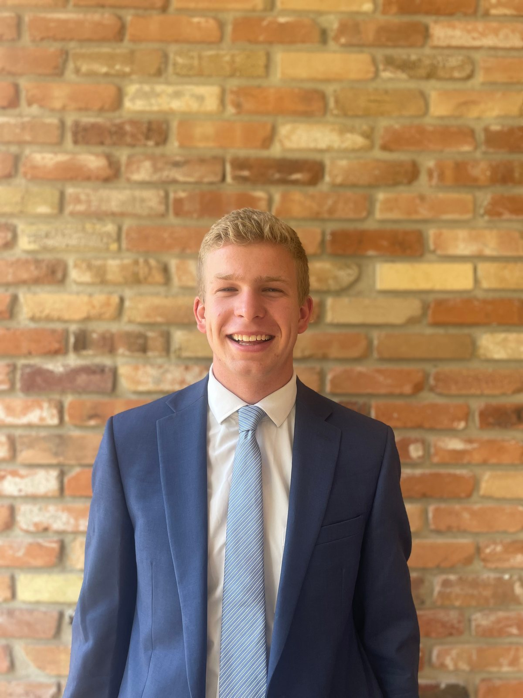
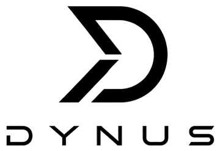
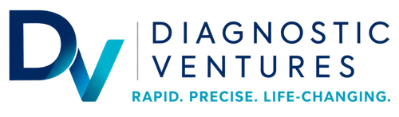
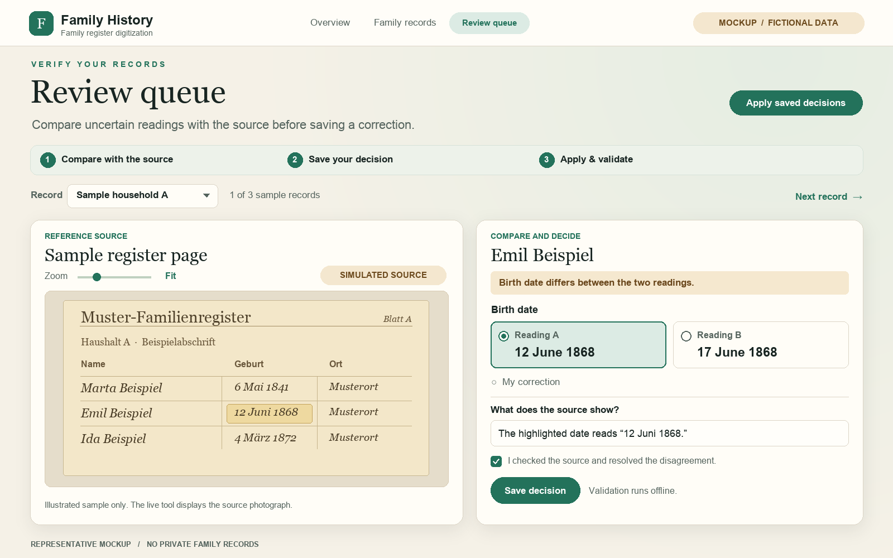
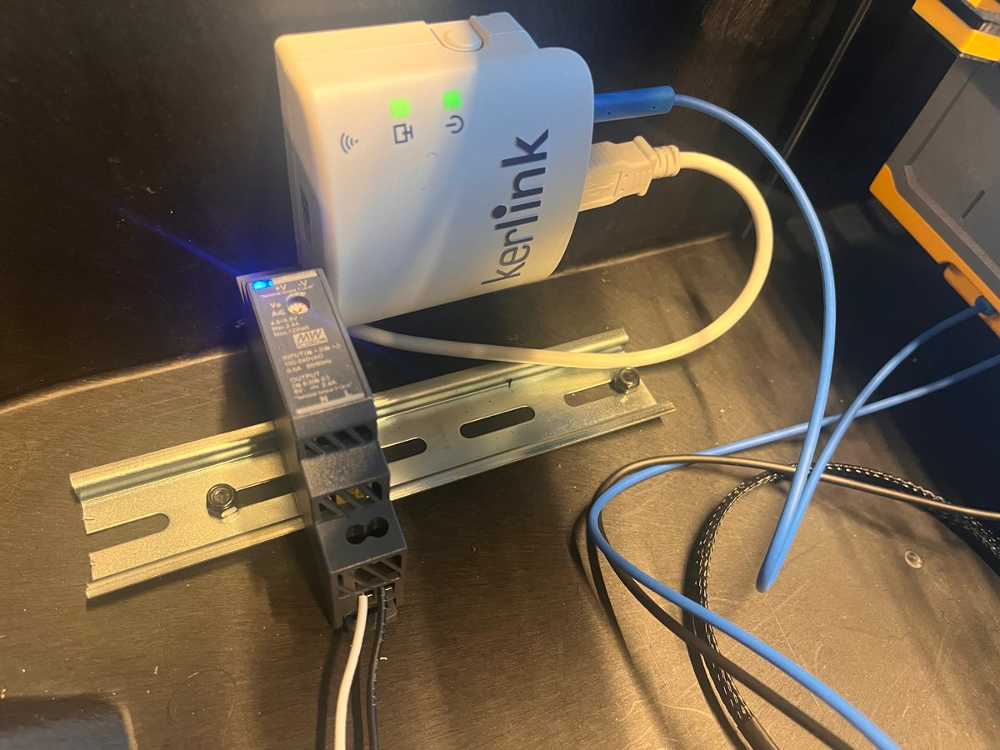
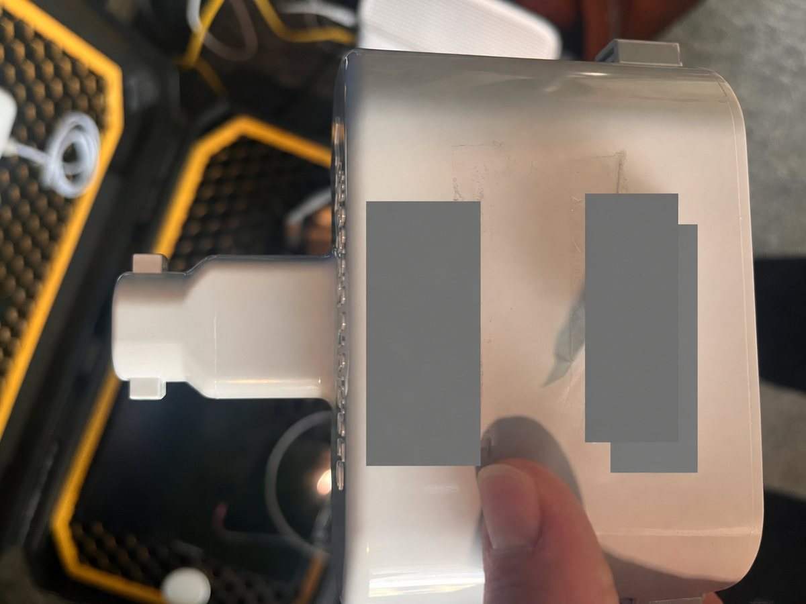
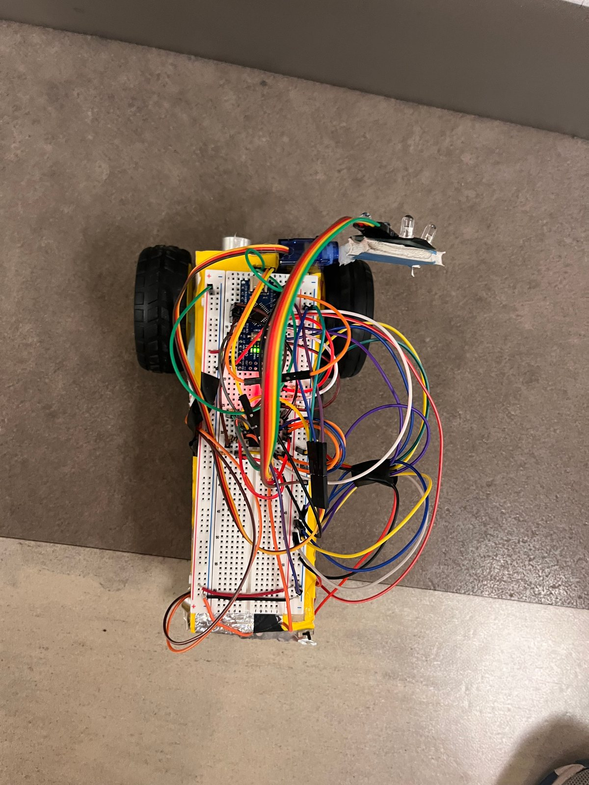
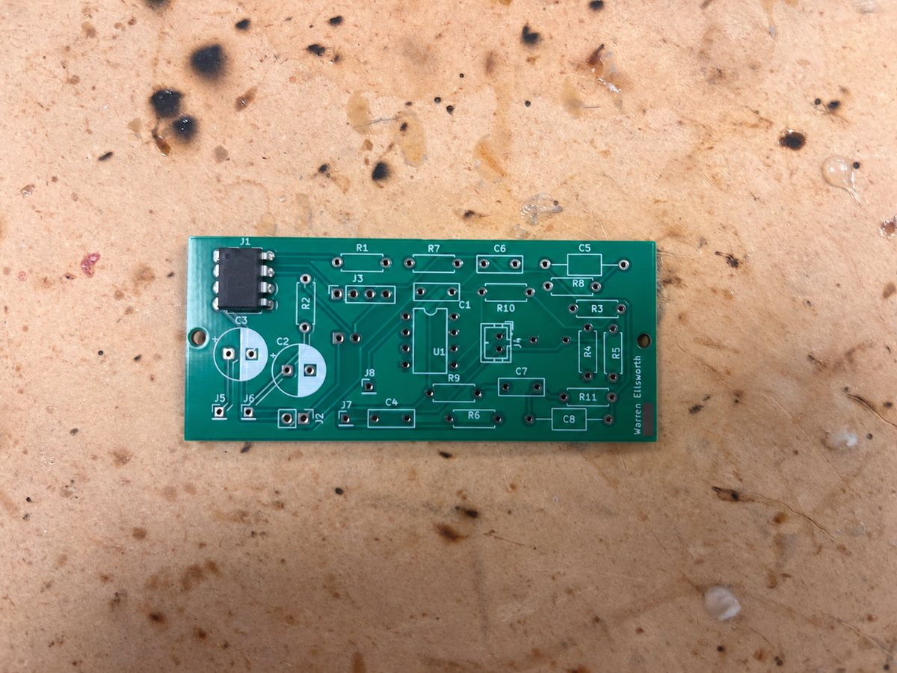
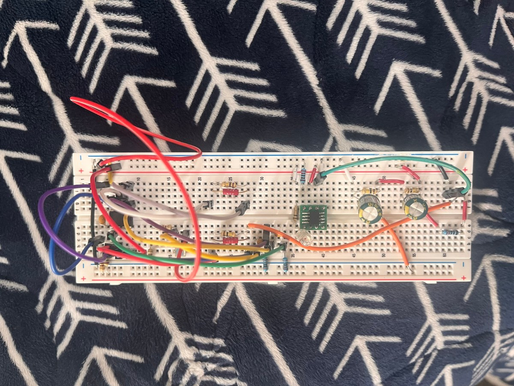
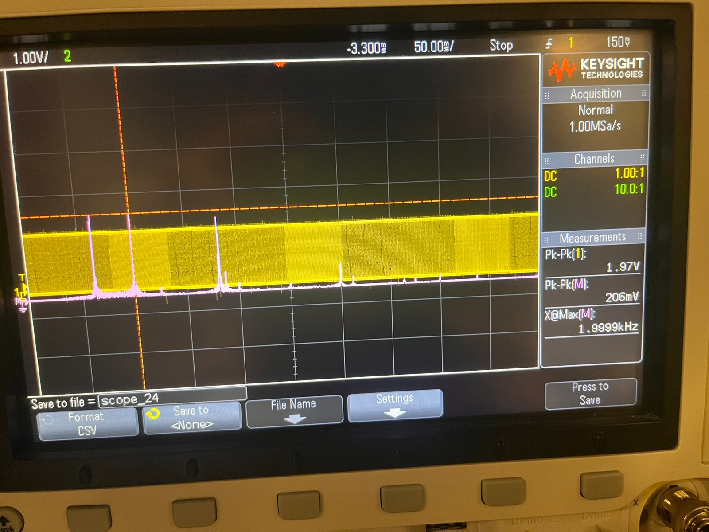

PassiveLogic
Hardware & AI Engineer
September 2026–present
Building bulk provisioning tools that bring meter and environmental-sensor fleet commissioning from days to minutes.
Electrical engineering · BYU · Provo, Utah
I like figuring out how things work—and building things that help people.
I’m Warren Ellsworth, an Electrical Engineering student at Brigham Young University with a Mathematics minor. My interests sit where embedded hardware, autonomous systems, and intelligent software meet.
My experience spans hands-on circuit and robotics projects, hardware deployment, AI software delivery, and technology commercialization. I enjoy turning ambiguous requirements into systems that can be built, tested, and explained.

01 / Professional introduction
I’m drawn to work where hardware, software, and real human needs meet. My direction is embedded systems, autonomy, and intelligent software—with enough time at the workbench to keep the engineering grounded.
From a sensor on a bench to the software that makes it useful.
At PassiveLogic, my work connects physical devices with building software. At Dynus, I deliver AI-enabled software around everyday business workflows. Earlier work in commercialization and venture diligence taught me to ask who a system serves, alongside how it works.
September 2026–present
Building bulk provisioning tools that bring meter and environmental-sensor fleet commissioning from days to minutes.

August 2026–present
Production software delivery for 3 clients across childcare, biotech, and medical diagnostics.
Earlier experience

May–August 2026
Helped shape product and manufacturing strategy for sepsis diagnostics. Laser-optics OEM analysis identified a 58% projected manufacturing-cost reduction.
January–July 2026
Managed ~25% of fund deal flow, from screening and technical/commercial diligence to investment recommendations.
June–August 2025
Sourced acquisition opportunities, analyzed portfolio companies, and developed growth initiatives.
January–December 2025
Evaluated technical IP and helped commercialize CAD software through buyer sourcing and technical diligence.
02 / Selected projects
Some live on a workbench. Others live on a screen. Each has taught me something about turning an idea into a useful system.
Explore more projects ↓
Independent project · Human-reviewed AI
Old handwritten records hold stories that are difficult to search. This project helps turn photographed German genealogy records into structured family data while keeping a person in charge of uncertain readings.
A macOS workflow combines Apple Vision OCR, AI extraction, source-linked review, and GEDCOM export. The illustrated queue shows comparing readings, saving a supported correction, and applying offline validation.
Working application · illustrative review screen
PassiveLogic · Connected devices
Getting a building’s devices online starts with a reliable gateway. I worked on provisioning tools to make that setup easier to check and recover when something goes wrong.
Kerlink commissioning used preflight checks, backups, rollback, and post-operation verification. A commissioning transaction was recorded as committed after verification.
Verified commissioning transaction
PassiveLogic · Hardware integration
I worked on onboarding a Zenner meter so its data could fit the equipment model used by the building’s software.
AI-assisted onboarding connected Quantum-compatible equipment modeling and IO drivers. Network join exchanges were observed; checking physical meter readings is the next verification step.
Onboarding & IO integration · network joins observed
BYU EC EN 240 · Winter 2026
This robot brings sensing, motion, and code together: read the light around it, decide where to go, and drive toward it.
I integrated photodiodes, PWM, finite-state machines, DC and servo motors, and C/C++ control logic. Oscilloscope and serial-monitor debugging helped connect software decisions to physical behavior.
Built academic project
BYU EC EN 340 · Work in progress
Moving a design onto a PCB makes the practical details tangible: where components go, how they connect, and what needs to be tested next.
I’m soldering the board for my course project and working through component-placement mistakes. The photo shows this early assembly stage; bench testing is still ahead. What soldering is teaching me ↓
EC EN 340 · Soldering in progress; bench testing next
BYU EC EN 340 · Transmitter prototype
The course’s laser-tag system uses an LED transmitter to send light to a photodiode receiver. This is my transmitter-chip circuit on a breadboard—a setup I can inspect and change as I work through the design.
Related Lab 3 work compared RC-response calculations and MATLAB models with oscilloscope observations. This photo documents the transmitter prototype; the receiver schematic and saved simulations in More projects cover a separate part of the system.
EC EN 340 · Breadboard prototypeOpen a project for a closer look.

A Qucs-S design uses an MCP6001 op amp, an input RC network, and parallel RC feedback. This plot comes from the saved NGspice AC sweep.

The receiver design brings together AC coupling, a shared bias reference, and resistor-capacitor feedback. It is the receiving side of the system, distinct from the transmitter prototype above.

Saved all-source NGspice simulation, not a hardware measurement.

Embedded C work on a Raspberry Pi Zero / Arduino-based system included packetized image transmission, grayscale conversion, color-channel manipulation, and digital filtering, alongside camera, power, input, and wireless integration.
React/TypeScript applications bring together relational data, authentication, serverless APIs, client portals, and integrations. Engineering priorities include authorization, input validation, provider fallbacks, testing, and reliable core workflows.
I designed and fabricated a high-voltage deionization test fixture with CAD, 3D printing, machined plates, insulation, pumps, and tubing. Varying flow rate and measuring conductivity showed no significant salinity reduction, helping evaluate the proposed method.
Notes from EC EN 340, written while learning to connect circuit theory, simulation, and bench work.
Connecting a model to a circuit.
This is a high pass filter that I built using an op amp. You can see the AC response with the corner around 100 Hz. It is cool to see this signal working from a high pass to low pass perspective. I think it is interesting to work with op amps in simulations and then transfer them to real circuits and having them work in real life.
Learning through design iterations.
This is an image of a final design for my two op amps for the laser tag gun. It was interesting to go through the process of trial and error here. I tried many different configurations, I appreciated that we were given unclear documentation and not a lot of guidance. I was able to learn a lot by researching and trial and error. We needed to make a band-pass filter with a high-pass filter cornered around 1 kHz and a low-pass filter cornered around 5 kHz. I decided on capacitor values that enabled these configurations. AI helped me come up with this circuit configuration. One thing I really like about this design is that you are able to tweak the gain without changing the corner frequencies themselves. We do this by adjusting the value of the resistor connected to vp.
Learning to examine a breadboard signal in the frequency domain.
It was cool to see a Fourier transform being used to implement useful circuit analysis. We can see as we run the Fourier transform on our receiver breadboard that distinct peaks show up where player frequencies are being transmitted. You also can see that the noise frequency passed into the filter is strongly diminished, proving that the filter did an effective job of reducing noise while amplifying desired signal frequencies. It took me a lot of trial and error to get to this point. One of the biggest things I was actually struggling with was that low frequencies (i.e., 6 Hz) still had strong amplitudes. I actually resolved this (AI’s idea) by putting a second coupling capacitor between vp and the second op-amp. This made it so the signals had strong enough relative amplitudes to noise frequencies to pass the autograder’s tests.
Learning patience and care while soldering.
Going from circuit design to real life is scary. With things that theoretically work in simulations and on breadboards, the tolerance for error suddenly drops putting them on a PCB. Connections are printed and not malleable. Debugging is difficult because it requires rewiring. Even just soldering has been difficult. I soldered two components in the wrong spot and they were very hard to remove. You can see my receiver chip clearly in the wrong spot in the top left corner of this board (it should be in the center). That teaches the importance of careful and deliberate problem-solving as opposed to rushing to a solution.
A student reflection on persistence and debugging.
I have learned throughout this class that perseverance and patience is what makes effective engineers. I have struggled through many problems and bugs this semester, and I have seen that the key is persistence -- trial and error. You have to keep trying different things, figuring out what the root cause is. The best way to debug is to always be learning.
A student goal for the next part of the semester.
Through the next part of the semester I plan to improve my process to be proactive about learning about things not just how they will kick things into the goal to get a good grade but where I apply what I am learning to the workforce. Be ready to take detours to learn the valuable things I don't normally learn.
Learning to work patiently with AI as a development partner.
One thing I have learned the importance of is patient trial-and-error. In the age of AI, I feel like we have the tendency to focus on the most rapid solution. We should appreciate the work of AI as a development partner, but also gratefully realize that while AI can accomplish a lot, when we hit bugs we shouldn’t become frustrated. We are blessed with these advanced tools but we don’t need to expect perfection out of them.
A personal reflection on faith during the circuit-building process.
One BYU aim that has consistently reiterated for me during this circuit-building process is that of spiritual strengthening. As I have gone through the trial-and-error process of building circuits, it has been cool to receive spiritual guidance and inspiration along the way about how I should go about managing my time, which things I should focus on, and what changes I should make to circuits when I am frustrated.